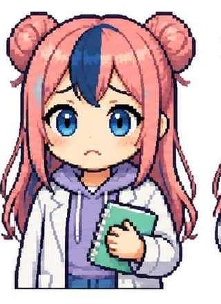
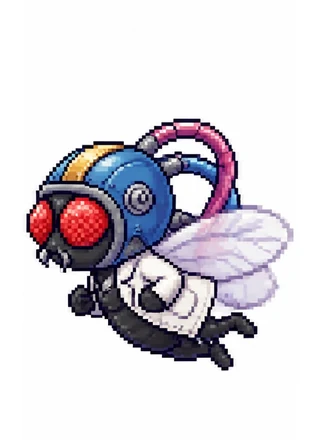
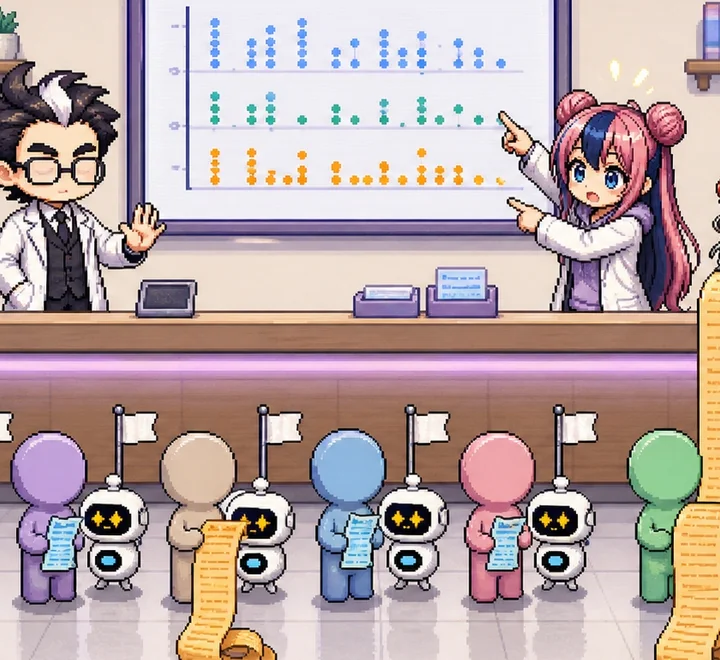
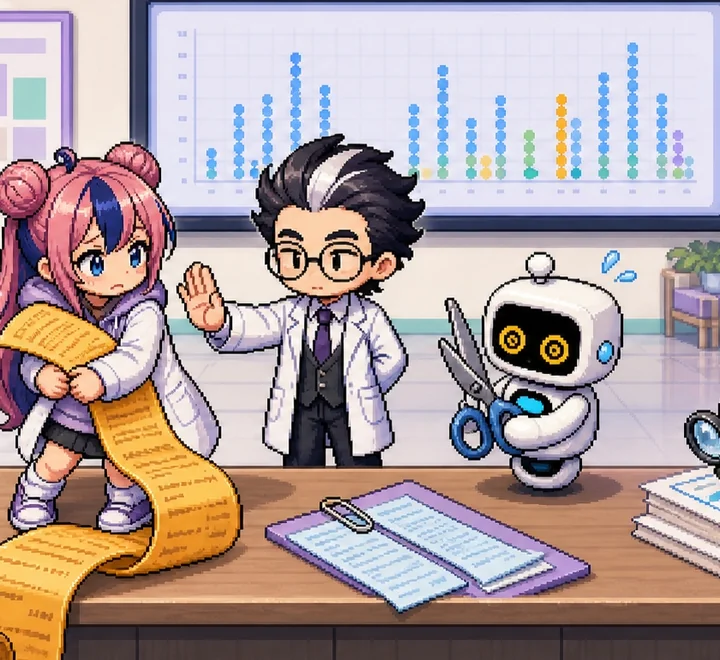
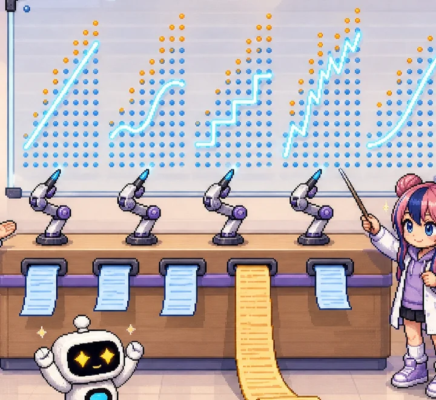
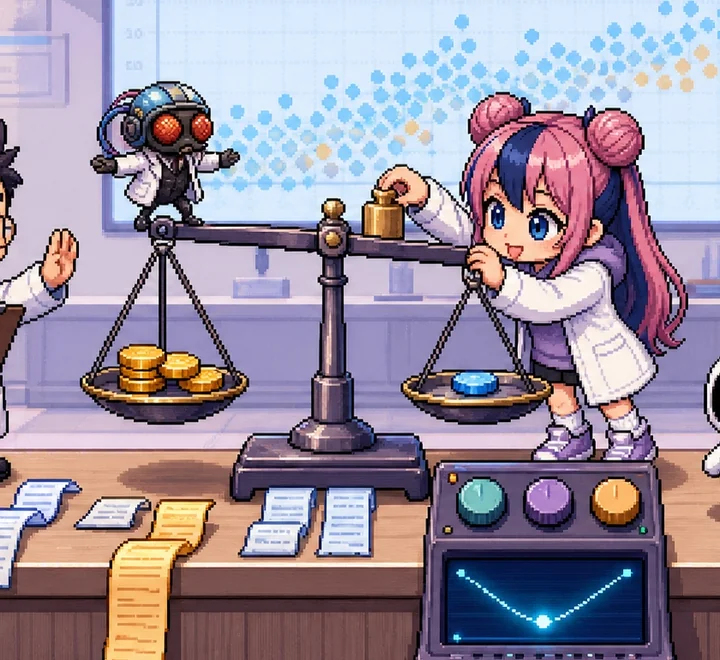
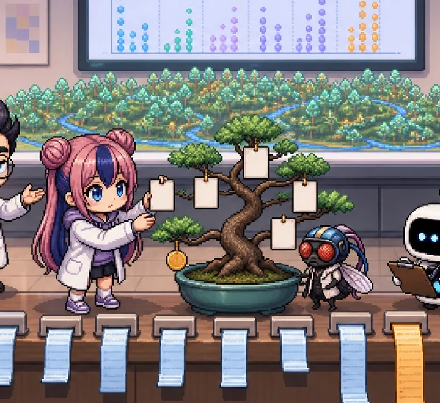
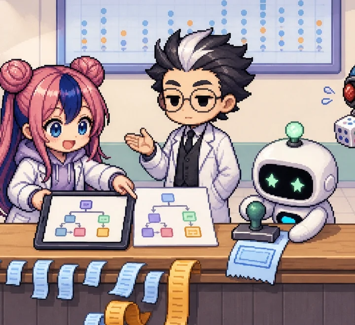

식구들The crew
인슈어테크_01 · 02 와 같은 식구입니다. 그림 버튼을 누르면 모습이 바뀝니다.


조교 · 박사님 연구실 조교
역할 학습자 대신 "왜요?"를 묻고, 박사님 말에 제일 먼저 반응한다
성격 숫자보다 가입자 얼굴이 먼저 떠오르는 조교. 궁금하면 못 참고, 박사님이 같은 말을 하면 바로 “또요?”가 나온다.
“평균이 $13,279 인데 그 금액을 낸 사람은 거의 없다고요? …박사님, 설마 또 기준선이에요?”


박사NPC · 보험 데이터 연구소 박사
역할 비유와 실제 숫자로 설명하고, 편 끝에 핵심 세 줄을 정리한다
성격 연구소 같은 자리에 늘 서 있는 NPC. 말을 걸 때마다 차분하게 같은 원칙을 되풀이한다. 한쪽 손바닥을 들면 설명이 시작된다.
“(말을 걸었다) …그 숫자, 기준선부터 봅시다. (다시 말을 걸었다) …기준선부터 봅시다.”



초파리 연구원 · 다음 질문 담당
역할 편 끝마다 다음 편의 질문을 던진다
성격 원래 실험 대상이었는데 연구원으로 승진했다. 짧고 엉뚱하지만 질문은 늘 정곡을 찌른다.
“그런데 그 금액, 종이 한 장에 적을 수 있어요?”


머니로보 · money-robo · 견적 로봇 (상태 캐릭터)
역할 지금 모델의 상태를 얼굴 표시창으로 보여 준다
성격 삐빅. 이름은 머니로보지만 돈은 안 받는다. “비용”이라는 말만 나오면 램프가 켜지고, 큰 청구를 적게 잡으면 표시창이 빨개진다.
“삐빅, 견적 중… 과소 추정 경보!”
공통 소재The shared data
건강보험 가입자 1,337명, 맞힐 것은 1년 의료비.
모든 편이 같은 데이터, 같은 학습/시험 나누기를 씁니다. 공개 학습용 실제 데이터이며, 가상 데이터를 만들거나 행을 늘리는 증강을 하지 않습니다. 완전히 같은 행 1건만 빼고(2편), 맞힐 금액은 자르거나 고치지 않습니다.
| 종류 | smoker | 가입자 수 | 평균 의료비 | 중앙값 | 평균 나이 | 평균 BMI | 시리즈에서의 역할 |
|---|---|---|---|---|---|---|---|
| 비흡연자 | no | 1,063 | $8,441 | $7,346 | 39.4 | 30.7 | 79.5% — 아래쪽 띠, 나이에 따라 완만히 오름 |
| 흡연자 | yes | 274 | $32,050 | $34,456 | 38.5 | 30.7 | 20.5% — 위쪽 두 띠, 전체 의료비의 49.5% |
공통 좌표 평면
가로 = 나이, 세로 = 1년 의료비. 1·3편의 그림이 이 평면 위에 그려집니다. 이 평면에는 점이 띠 세 줄로 보입니다.
숨은 열쇠
흡연 여부. 가입자의 20.5%인데 평균 의료비가 비흡연자의 3.8배이고, 전체 의료비의 49.5%를 차지합니다. 평면에 없는 이 정보가 5편 견적 기준서의 첫 질문이 됩니다.
기준선
모두에게 학습 데이터 평균 $13,250 만 답하기. 시험 데이터에서 MAE $9,151, R² 0 근처, 고액 고객 MAE $28,371. 모든 점수는 이 숫자와 함께 읽습니다.
데이터: 공개 학습용 Medical Cost 데이터 (원본 CSV, 저장소 사본 md5 d5364d06246fb4bfa4cc7d1ee89ebd0d) · 학습 1,069 / 시험 268 (charges 10분위 층화 80:20, random_state=42, data/split.csv) · 처리 규칙은 2편, 코드는 code/common.py
연구 지도: 여섯 편Research map
앞 편에서 막힌 질문이 다음 편의 출발점입니다.

EPISODE 1 · 해설형 · 원리모두에게 평균만: 평균의 함정
모두에게 평균 $13,250 만 말해도 예측 합계는 −1.1% 로 맞는다. 그래도 한 사람당 $9,151 씩 틀리는 이유와, 대신 봐야 할 숫자.
이런 걸 해 봐요 규칙 버튼을 바꿔 누르며 MAE 와 고액 오차가 어떻게 움직이는지 본다

EPISODE 2 · 방법형 · 성능·데이터지우지 말고 지킨다: 중복 · 이상치 · 로그
같은 행 1건, IQR 이상치 139건, 오른쪽으로 긴 꼬리. 무엇을 빼고 무엇을 지켜야 하는지 숫자로 고른다.
이런 걸 해 봐요 이상치 처리 방법을 바꿔 시험 데이터의 고액 오차를 비교한다

EPISODE 3 · 애니메이션형 · 원리모델 다섯, 곡선 다섯
선형 · 릿지 · 의사결정나무 · KNN · 그래디언트 부스팅을 같은 평면에서 동시에 학습시켜 곡선 모양을 비교한다.
이런 걸 해 봐요 재생기로 복잡도를 올리며 다섯 곡선이 어떻게 달라지는지 본다

EPISODE 4 · 실험실형 · 직접 실험여유분과 비용 실험실
적게 잡으면 3배 비싸다면, 견적에 여유분을 얼마나 얹어야 할까? 다이얼로 최소 비용점을 찾는다.
이런 걸 해 봐요 다이얼을 하나씩 바꾸고 실험 기록표로 비교한다

EPISODE 5 · 해설형 · 원리최고 모델을 흉내 내는 나무
최종 모델의 견적을 정답 삼아 나무를 학습시키면, 몇 개의 규칙으로 얼마나 똑같이 견적을 낼까?
이런 걸 해 봐요 나무 크기를 바꾸며 충실도와 읽기 쉬움의 균형을 찾는다

EPISODE 6 · 정리형 · 성능·데이터기준서가 곧 견적: 의료비 견적 앱
배포 방식 4가지를 비교하고, 규칙표로 견적을 내는 앱을 시험 데이터 268명으로 검증한다.
이런 걸 해 봐요 가입자 정보를 넣어 견적 근거를 보고, 노트북과 일치하는지 확인한다
편과 편을 잇는 질문
- 1 → 2 · 그런데 같은 사람이 두 번 들어 있던데요? 그리고 $63,770 짜리는 이상치라던데, 지워요? 저는 두 달이면 최고령이라 꼬리 얘기에 민감해요.
- 2 → 3 · 데이터는 지켰으니, 이제 모델은 몇 개나 데려와요? 저는 다리가 여섯이라 다섯 마리까지는 업고 갈 수 있어요.
- 3 → 4 · 그런데 최종 모델도 19.4%는 적게 잡던데요? 조금 넉넉하게 부르면 안 돼요? 저는 과일 한 조각이 모자라면 큰일 나거든요.
- 4 → 5 · 그런데 이 견적, 계산식 없이 종이 한 장으로 낼 수 있어요? 상담 창구에는 파이썬이 없대요. 제 손은 너무 작아서 계산기도 못 눌러요.
- 5 → 6 · 종이 한 장이면 끝이에요? 이걸 앱으로 만들면요? 인터넷이 끊기면요? 저는 바람만 불어도 날아가서 걱정이 많아요.
보는 법How to use
처음 오신 분을 위한 안내.
- 버튼만 누르기: 모든 그림과 표는 버튼·슬라이더로 움직입니다. 코드를 몰라도 끝까지 볼 수 있습니다.
- 숫자 읽는 법: 모든 점수는 기준선(모두에게 평균: MAE $9,151, R² 0)과 함께 읽습니다. 금액은 달러이고, 주지표는 한 사람당 평균 오차 MAE 입니다.
- 색: 주황 = 적게 잡음(과소 추정), 파랑 = 많이 잡음(과대 추정). 흡연자 강조도 주황 계열입니다.
- Colab 실행: 각 편 “실무로 잇기”의 코드 상자에서 .py 나 .ipynb 를 받아 Colab에서 실행하세요. 초보용(e)은 함수·반복문·if·들여쓰기 없이, 정식 코드(f)는 공통 코드 common.py 를 씁니다.
- 페이지의 숫자: 모두 정식 코드를 실제로 실행한 결과입니다. 특성 1개만 쓴 평면 그림은 교육용 모델임을 그 자리에 밝혔습니다.
- 강사라면: 각 편 끝의 “교육자용 정답” 링크에 정답 · 채점 기준 · 섹션별 강의 멘트 · 실험 과제 예시 답이 있습니다.
- 다음 단계: 1부를 마치면 같은 데이터로 과제를 푸는 2부 실전편으로 이어집니다.
- 휴대폰: 모두 볼 수 있지만, 3편(다섯 모델 동시 학습)과 4편(실험실)은 PC 화면을 권합니다.